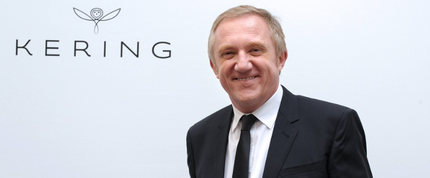

Kering (anteriormente PPR, como siglas de Pinault-Printemps-Redoute) (Euronext: PP) es un grupo de empresas comerciales francesas creadas por el empresario y millonario2 François Pinault. El grupo PPR desarrolla la comercialización de un conjunto de marcas mundiales, marcas para el gran público y marcas de lujo, que son distribuidas por 120 países.3 Los títulos de PPR cotizan en la bolsa Euronext París.
El 22 de marzo de 2013 Pinault anunció que el grupo cambiaría su nombre por el de Kering, lo que fue aprobado por los accionistas el 18 de junio de 2013